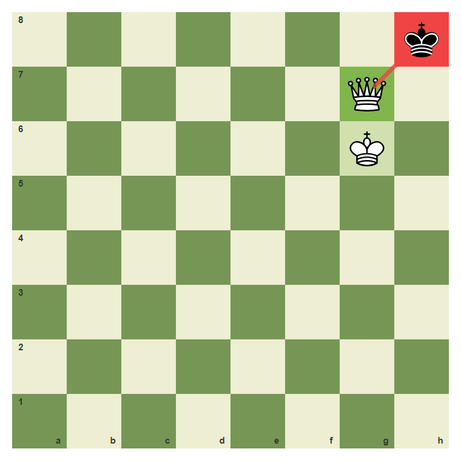
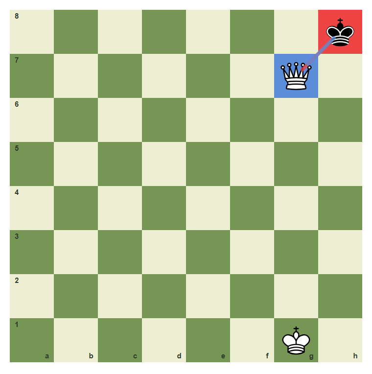
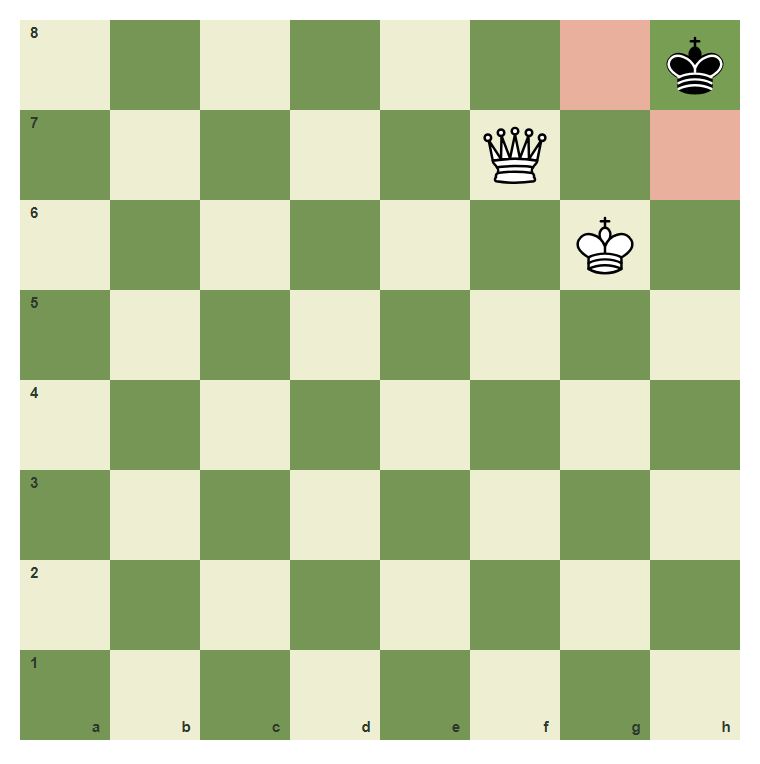
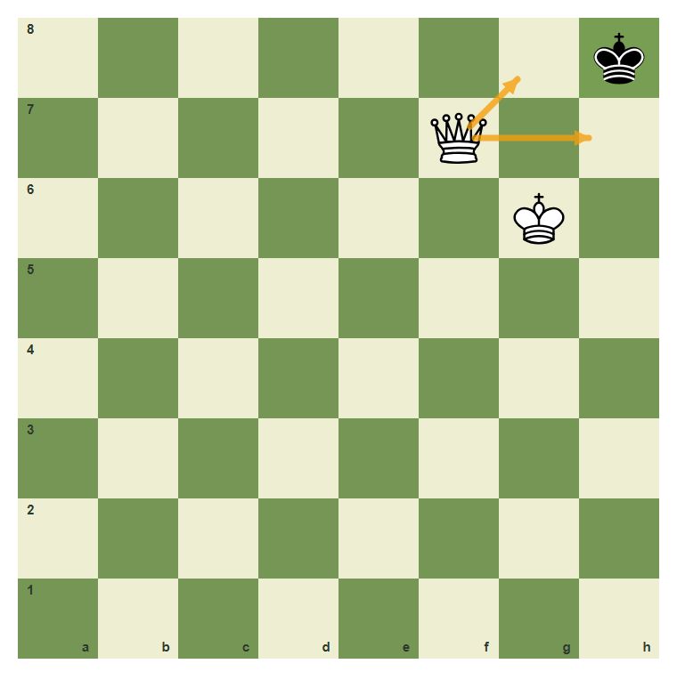
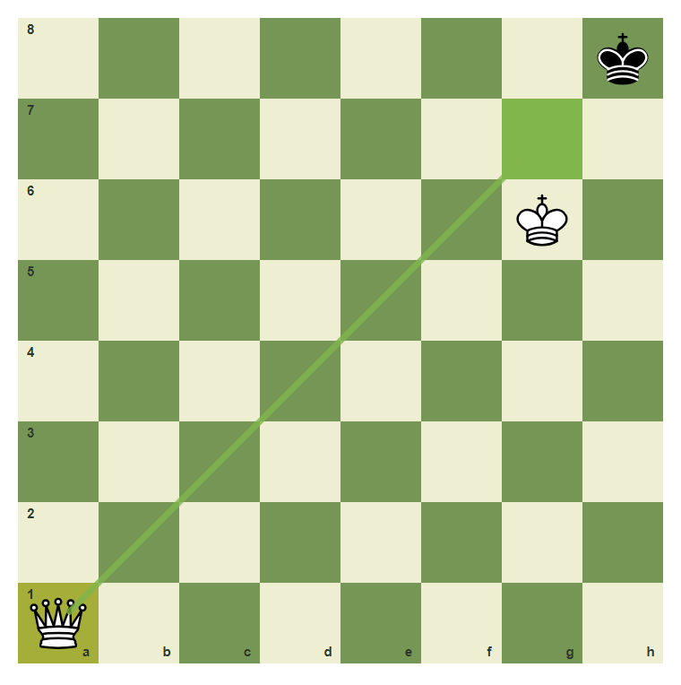

Checkmate And Stalemate
Winning requires mate, not just trapping the king.
- Define checkmate as check with no legal escape.
- Recognize stalemate as no legal move but no check.
- Avoid stalemating a winning position.
- Deliver a simple queen-assisted mate.
Check Plus No Escape
Checkmate means the king is in check and there is no legal escape. If the king is not in check, the position is not checkmate.
Queen-supported checkmate

The queen checks h8, and the king on g6 supports the queen. Black has no escape.
Check but not mate

This is check, but the queen is not protected. Black can capture it.
Stalemate Is Not A Win
Stalemate happens when the player to move is not in check but has no legal move. Stalemate is a draw. Beginners lose many winning positions by forgetting this difference.
Stalemate pattern

Black is not in check, but every black king move is controlled. This is stalemate, not checkmate.
The missing check

The queen controls escape squares, but she does not attack h8. No check means no checkmate.
Mate move available

White can play Qa1 to g7, giving a protected queen checkmate.
Deliver queen-supported mate
Move the queen from a1 to g7 to give checkmate.
Common Mistake
Common mistake: stalemate instead of mate
This looks winning because the king is trapped, but the black king is not in check. Trapped without check is stalemate, so the game is drawn.

No check on h8 means this is stalemate, not mate.
Chapter Checkpoint
What is checkmate?
Checkmate means:
What is stalemate?
Stalemate means:
Is stalemate a win?
Stalemate is: